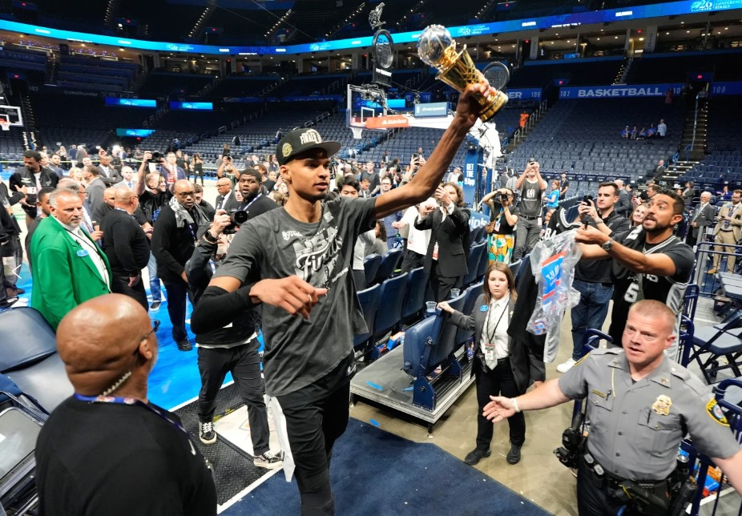

Celebrating Victor Wembanyama's Success

Despite being early in his professional career, Victor Wembanyama has already achieved more than many players accomplish during an entire career. His unique talent and dedication have helped him earn recognition from fans, coaches and basketball experts around the world.
Victor Wembanyama has changed expectations of what a modern basketball player can achieve. His ability to combine elite scoring, defence, ball handling and shooting makes him one of the most complete players in basketball.
Many experts believe he has the potential to become one of the greatest players in NBA history if he continues developing at his current rate.
Although Victor has already achieved significant success, his career is only beginning. Fans and analysts expect him to compete for additional MVP awards, championships and international honours in the future.
His ambition and commitment to improvement suggest that many more achievements will be added to this list over the coming years.